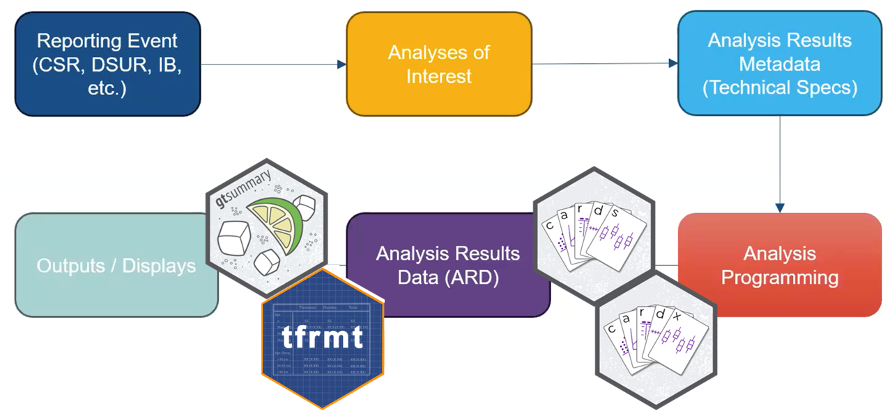

05:00
Unlocking Analysis Results Datasets (ARDs)
A Practical Workshop for Creating and Utilizing ARDs for Clinical Reporting
Daniel D. Sjoberg and Becca Krouse
Instructors
Who are we?
What do we do?
Why are we here?

Workshop outline
Introduction to the Analysis Results Standard and {cards}
Introduction to the {cardx} Package and ARD Extras
ARD to Tables with {gtsummary}
ARD to Tables with {tfrmt}
Introduction
This workshop is for you if…
You want to learn about ARDs
You want to learn about new tools for working with ARDs
You want to learn how to make displays from ARDs
You want to practice coding with hands-on exercises
Workshop expectations
What to do if you find a bug? 🐛
Ask questions!
Let us know in the chat if you need help
Be respectful, follow the Terms and Conditions of R/Pharma https://rinpharma.com/terms/
Who are you?
Slido quiz time!
Working environment
For consistency, we will be working in Posit Cloud
Everything has been installed and set up for you
You can also opt to work in local RStudio
Following the course, all content from this workshop will be available on the course website and GitHub
Quick warm-up
If using Posit Cloud:
Navigate to Posit Cloud link
Click on the Project to make a personal copy
If using local RStudio:
- Exercises can be found here: https://www.danieldsjoberg.com/ARD-PHUSE-workshop-2025/exercises.html
Open
exercises/01-warmup.RComplete the exercise
Solution for 00-warmup.R
Using dplyr:
- From the ADSL dataset:
- Subset to the safety population (SAFFL == “Y”)
- calculate the number of unique subjects in each treatment group (TRT01A)
Analysis Results Standard
Analysis Results Standard (ARS)


Analysis Results Standard (ARS)
Emerging standard for prospectively encoding statistical analysis reporting pipeline in a machine-readable format.
Logical model that describes analysis results and associated metadata.
Primary objectives:
Leverage analysis results metadata to drive automation of results
Support storage, access, processing, traceability and reproducibility of results
Analysis Results Standard (ARS)
Example ARS Flow

- The ARS provides a metadata-driven infrastructure for analysis
Analysis Results Standard (ARS)
Example ARS Flow
The ARS provides a metadata-driven infrastructure for analysis
{cards} serves as the engine for the analysis
Analysis Results Data (ARD)
Encodes statistical analysis outcomes in a machine-readable format.
The ARD model specifies how statistical results are saved into a structured format.
The ARD can be used to to subsequently create tables and figures.
The ARD does not describe the layout of the results
Analysis Results Data (ARD)
- After the initial creation of an ARD, the results can later be re-used again and again for subsequent reporting needs.

A few notes about ARDs
Rethinking QC
QC can be focused on the raw value, not the formatted display
You don’t have to waste time trying to match formatting to match QC
But…QC will be more sensitive to floating point
Flexible data file types
- ARD can be saved as a dataset (rds, xpt, etc) or json file
ARDs using {cards}

{cards}: Introduction
Part of the Pharmaverse
Collaboration between Roche, GSK, Novartis
Contains a variety of utilities for making ARDs
Can be used within the ARS workflow and separately
45k downloads per month 🤯
{cards}: ard_continuous()
library(cards)
# create ARD with default summary statistics
ADSL |>
ard_continuous(
variables = AGE
){cards} data frame: 8 x 8 variable context stat_name stat_label stat fmt_fn
1 AGE continuo… N N 254 0
2 AGE continuo… mean Mean 75.087 1
3 AGE continuo… sd SD 8.246 1
4 AGE continuo… median Median 77 1
5 AGE continuo… p25 Q1 70 1
6 AGE continuo… p75 Q3 81 1
7 AGE continuo… min Min 51 1
8 AGE continuo… max Max 89 1ℹ 2 more variables: warning, error{cards}: ard_continuous() by variable
by: summary statistics are calculated by all combinations of the by variables, including unobserved factor levels
{cards} data frame: 24 x 10 group1 group1_level variable stat_name stat_label stat
1 ARM Placebo AGE N N 86
2 ARM Placebo AGE mean Mean 75.209
3 ARM Placebo AGE sd SD 8.59
4 ARM Placebo AGE median Median 76
5 ARM Placebo AGE p25 Q1 69
6 ARM Placebo AGE p75 Q3 82
7 ARM Placebo AGE min Min 52
8 ARM Placebo AGE max Max 89
9 ARM Xanomeli… AGE N N 84
10 ARM Xanomeli… AGE mean Mean 74.381ℹ 14 more rowsℹ Use `print(n = ...)` to see more rowsℹ 4 more variables: context, fmt_fn, warning, error{cards}: ard_continuous() statistics
statistic: specify univariate summary statistics. Accepts any function, base R, from a package, or user-defined.
cv <- function(x) sd(x, na.rm = TRUE)/mean(x, na.rm = TRUE)
ADSL |>
ard_continuous(
variables = AGE,
by = ARM,
statistic = ~ list(cv = cv) # customize statistics
) group1 group1_level variable stat_name stat_label stat
1 ARM Placebo AGE cv cv 0.114
2 ARM Xanomeli… AGE cv cv 0.106
3 ARM Xanomeli… AGE cv cv 0.11{cards}: ard_continuous() statistics
Customize the statistics returned for each variable
ADSL |>
dplyr::mutate(AGE2 = AGE) |>
ard_continuous(
variables = c(AGE, AGE2),
by = ARM,
statistic = list(AGE = list(cv = cv),
AGE2 = continuous_summary_fns(c("mean","median")))
) group1 group1_level variable stat_name stat_label stat
1 ARM Placebo AGE cv cv 0.114
2 ARM Placebo AGE2 mean Mean 75.209
3 ARM Placebo AGE2 median Median 76
4 ARM Xanomeli… AGE cv cv 0.106
5 ARM Xanomeli… AGE2 mean Mean 74.381
6 ARM Xanomeli… AGE2 median Median 76
7 ARM Xanomeli… AGE cv cv 0.11
8 ARM Xanomeli… AGE2 mean Mean 75.667
9 ARM Xanomeli… AGE2 median Median 77.5{cards}: ard_continuous() fmt_fn
Override the default formatting functions, method 1:
ADSL |>
ard_continuous(
variables = AGE,
by = ARM,
fmt_fn = ~list(mean = 0)
) |>
apply_fmt_fn() # add a character column of rounded results{cards} data frame: 24 x 11 group1 group1_level variable stat_name stat_label stat stat_fmt
1 ARM Placebo AGE N N 86 86
2 ARM Placebo AGE mean Mean 75.209 75
3 ARM Placebo AGE sd SD 8.59 8.6
4 ARM Placebo AGE median Median 76 76.0
5 ARM Placebo AGE p25 Q1 69 69.0
6 ARM Placebo AGE p75 Q3 82 82.0
7 ARM Placebo AGE min Min 52 52.0
8 ARM Placebo AGE max Max 89 89.0
9 ARM Xanomeli… AGE N N 84 84
10 ARM Xanomeli… AGE mean Mean 74.381 74ℹ 14 more rowsℹ Use `print(n = ...)` to see more rowsℹ 4 more variables: context, fmt_fn, warning, error{cards}: ard_continuous() fmt_fn
Override the default formatting functions, method 2:
ADSL |>
ard_continuous(
variables = AGE,
by = ARM,
) |>
update_ard_fmt_fn(stat_names = "mean", fmt_fn = 0) |>
apply_fmt_fn() {cards} data frame: 24 x 11 group1 group1_level variable stat_name stat_label stat stat_fmt
1 ARM Placebo AGE N N 86 86
2 ARM Placebo AGE mean Mean 75.209 75
3 ARM Placebo AGE sd SD 8.59 8.6
4 ARM Placebo AGE median Median 76 76.0
5 ARM Placebo AGE p25 Q1 69 69.0
6 ARM Placebo AGE p75 Q3 82 82.0
7 ARM Placebo AGE min Min 52 52.0
8 ARM Placebo AGE max Max 89 89.0
9 ARM Xanomeli… AGE N N 84 84
10 ARM Xanomeli… AGE mean Mean 74.381 74ℹ 14 more rowsℹ Use `print(n = ...)` to see more rowsℹ 4 more variables: context, fmt_fn, warning, error{cards}: ard_categorical()
- includes
n,%,Nby default
{cards} data frame: 27 x 11 group1 group1_level variable variable_level stat_name stat_label stat
1 ARM Placebo AGEGR1 <65 n n 14
2 ARM Placebo AGEGR1 <65 N N 86
3 ARM Placebo AGEGR1 <65 p % 0.163
4 ARM Xanomeli… AGEGR1 <65 n n 11
5 ARM Xanomeli… AGEGR1 <65 N N 84
6 ARM Xanomeli… AGEGR1 <65 p % 0.131
7 ARM Xanomeli… AGEGR1 <65 n n 8
8 ARM Xanomeli… AGEGR1 <65 N N 84
9 ARM Xanomeli… AGEGR1 <65 p % 0.095
10 ARM Placebo AGEGR1 >80 n n 30ℹ 17 more rowsℹ Use `print(n = ...)` to see more rowsℹ 4 more variables: context, fmt_fn, warning, errorAny unobserved levels of the variables will be present in the resulting ARD.
{cards}: Other Summary Functions
ard_dichotomous(): similar toard_categorical(), but for dichotomous summariesard_hierarchical(): similar toard_categorical(), but built for nested tabulations, e.g. AE terms within SOCard_complex(): similar toard_continuous(), but the summary functions can be more complex and accepts other arguments like the full and subsetted (within the by groups) data sets.ard_missing(): tabulates rates of missingness
The results from all these functions are entirely compatible with one another, and can be stacked into a single data frame. 🥞
{cards}: Other Functions
In addition to exporting functions to prepare summaries, {cards} exports many utilities for wrangling ARDs and creating new ARDs.
Constructing: bind_ard(), tidy_as_ard(), nest_for_ard(), check_ard_structure(), and many more
Wrangling: shuffle_ard(), get_ard_statistics(), replace_null_statistic(), etc.
{cards}: Stacking utilities
dataand.byare shared by allard_*callsAdditional Options
.overall,.missing,.attributes, and.total_nprovide even more resultsBy default, summaries of the
.byvariable are included
ADSL |>
ard_stack(
.by = ARM,
ard_continuous(variables = AGE, statistic = ~ continuous_summary_fns(c("mean","sd"))),
ard_categorical(variables = AGEGR1, statistic = ~ "p")
) {cards} data frame: 24 x 11 group1 group1_level variable variable_level stat_name stat_label stat
1 ARM Placebo AGE mean Mean 75.209
2 ARM Placebo AGE sd SD 8.59
3 ARM Xanomeli… AGE mean Mean 74.381
4 ARM Xanomeli… AGE sd SD 7.886
5 ARM Xanomeli… AGE mean Mean 75.667
6 ARM Xanomeli… AGE sd SD 8.286
7 ARM Placebo AGEGR1 <65 p % 0.163
8 ARM Placebo AGEGR1 >80 p % 0.349
9 ARM Placebo AGEGR1 65-80 p % 0.488
10 ARM Xanomeli… AGEGR1 <65 p % 0.131ℹ 14 more rowsℹ Use `print(n = ...)` to see more rowsℹ 4 more variables: context, fmt_fn, warning, errorExercise 🏃➡️
Open
exercises/01-cards-partA.RCompute the demographic summaries as described
10:00
Solutions for 01-cards-partA.R
Solutions for 01-cards-partA.R
A. First, compute the continuous summaries for AGE, BMI, HEIGHT, WEIGHT by TRT01A
Solutions for 01-cards-partA.R
A. First, compute the continuous summaries for AGE, BMI, HEIGHT, WEIGHT by TRT01A
group1 group1_level variable stat_name stat_label stat
1 TRT01A Placebo AGE N N 86
2 TRT01A Placebo AGE mean Mean 75.209
3 TRT01A Placebo AGE sd SD 8.59
4 TRT01A Placebo AGE median Median 76
5 TRT01A Placebo AGE p25 Q1 69
6 TRT01A Placebo AGE p75 Q3 82
7 TRT01A Placebo AGE min Min 52
8 TRT01A Placebo AGE max Max 89
9 TRT01A Placebo BMI N N 86
10 TRT01A Placebo BMI mean Mean 23.645Solutions for 01-cards-partA.R
B. Next, compute the categorical summaries for AGEGR1, SEX, RACE, ETHNIC by TRT01A
Solutions for 01-cards-partA.R
B. Next, compute the categorical summaries for AGEGR1, SEX, RACE, ETHNIC by TRT01A
group1 group1_level variable variable_level stat_name stat_label stat
1 TRT01A Placebo AGEGR1 >64 n n 72
2 TRT01A Placebo AGEGR1 >64 N N 86
3 TRT01A Placebo AGEGR1 >64 p % 0.837
4 TRT01A Xanomeli… AGEGR1 >64 n n 61
5 TRT01A Xanomeli… AGEGR1 >64 N N 72
6 TRT01A Xanomeli… AGEGR1 >64 p % 0.847
7 TRT01A Xanomeli… AGEGR1 >64 n n 88
8 TRT01A Xanomeli… AGEGR1 >64 N N 96
9 TRT01A Xanomeli… AGEGR1 >64 p % 0.917
10 TRT01A Placebo AGEGR1 18-64 n n 14Solutions for 01-cards-partA.R
C. Perform all of the summaries in a single ard_stack() call, including:
- summaries by TRT01A as performed above
- continuous summaries from part A for AGE, BMI, HEIGHT, and WEIGHT
- categorical summaries from part B for AGEGR1, SEX, RACE, ETHNICSolutions for 01-cards-partA.R
C. Perform all of the summaries in a single ard_stack() call, including:
- summaries by TRT01A as performed above
- continuous summaries from part A for AGE, BMI, HEIGHT, and WEIGHT
- categorical summaries from part B for AGEGR1, SEX, RACE, ETHNICard_stack(
data = adsl,
.by = TRT01A,
ard_continuous( variables = c(AGE, BMI, HEIGHT, WEIGHT)),
ard_categorical(variables = c(AGEGR1, SEX, RACE, ETHNIC))
) group1 group1_level variable variable_level stat_name stat_label stat
1 TRT01A Placebo AGE N N 86
2 TRT01A Placebo AGE mean Mean 75.209
3 TRT01A Placebo AGE sd SD 8.59
4 TRT01A Placebo AGE median Median 76
5 TRT01A Placebo AGE p25 Q1 69
6 TRT01A Placebo AGE p75 Q3 82
7 TRT01A Placebo AGE min Min 52
8 TRT01A Placebo AGE max Max 89
9 TRT01A Xanomeli… AGE N N 72
10 TRT01A Xanomeli… AGE mean Mean 73.778Solutions for 01-cards-partA.R
D. BONUS! For part C. above, add the following pieces
- overall summaries for all of the variables
- total N(Hint: Modify the .overall and .total_n arguments, respectively)
ard_stack(
data = adsl,
.by = TRT01A,
ard_continuous( variables = c(AGE, BMI, HEIGHT, WEIGHT)),
ard_categorical(variables = c(AGEGR1, SEX, RACE, ETHNIC))
) group1 group1_level variable variable_level stat_name stat_label stat
1 TRT01A Placebo AGE N N 86
2 TRT01A Placebo AGE mean Mean 75.209
3 TRT01A Placebo AGE sd SD 8.59
4 TRT01A Placebo AGE median Median 76
5 TRT01A Placebo AGE p25 Q1 69
6 TRT01A Placebo AGE p75 Q3 82
7 TRT01A Placebo AGE min Min 52
8 TRT01A Placebo AGE max Max 89
9 TRT01A Xanomeli… AGE N N 72
10 TRT01A Xanomeli… AGE mean Mean 73.778Solutions for 01-cards-partA.R
D. BONUS! For part C. above, add the following pieces
- overall summaries for all of the variables
- total N(Hint: Modify the .overall and .total_n arguments, respectively)
ard_stack(
data = adsl,
.by = TRT01A,
ard_continuous( variables = c(AGE, BMI, HEIGHT, WEIGHT)),
ard_categorical(variables = c(AGEGR1, SEX, RACE, ETHNIC)),
.overall = TRUE,
.total_n = TRUE
) group1 group1_level variable variable_level stat_name stat_label stat
1 TRT01A Placebo AGE N N 86
2 TRT01A Placebo AGE mean Mean 75.209
3 TRT01A Placebo AGE sd SD 8.59
4 TRT01A Placebo AGE median Median 76
5 TRT01A Placebo AGE p25 Q1 69
6 TRT01A Placebo AGE p75 Q3 82
7 TRT01A Placebo AGE min Min 52
8 TRT01A Placebo AGE max Max 89
9 TRT01A Xanomeli… AGE N N 72
10 TRT01A Xanomeli… AGE mean Mean 73.778{cards}: Hierarchical Summary Functions
Following hierarchical summary functions aid in nested tabulations (e.g. AE terms within SOC):
ard_hierarchical(): calculating nested subject-level ratesard_hierarchical_count(): calculating nested event-level counts
{cards}: ard_hierarchical
This function specializes in calculating subject-level rates.
Rates computed on lowest level
variables, nested within othersidhelps to check that no duplicate rows exist within thec(id, variables)columnsdenominatordictates the denominator for the rates
ard_hierarchical(
data = adae |> dplyr::slice_tail(n = 1L, by = c(USUBJID, TRTA, AESOC, AEDECOD)),
variables = c(AESOC, AEDECOD),
by = TRTA,
id = USUBJID,
denominator = ADSL |> dplyr::rename(TRTA = ARM)
) group1 group1_level group2 group2_level variable variable_level stat_name
1 TRTA Placebo AESOC GENERAL … AEDECOD APPLICAT… n
2 TRTA Placebo AESOC GENERAL … AEDECOD APPLICAT… N
3 TRTA Placebo AESOC GENERAL … AEDECOD APPLICAT… p
4 TRTA Xanomeli… AESOC GENERAL … AEDECOD APPLICAT… n
5 TRTA Xanomeli… AESOC GENERAL … AEDECOD APPLICAT… N
6 TRTA Xanomeli… AESOC GENERAL … AEDECOD APPLICAT… p
7 TRTA Xanomeli… AESOC GENERAL … AEDECOD APPLICAT… n
8 TRTA Xanomeli… AESOC GENERAL … AEDECOD APPLICAT… N
9 TRTA Xanomeli… AESOC GENERAL … AEDECOD APPLICAT… p
10 TRTA Placebo AESOC GENERAL … AEDECOD APPLICAT… n
stat_label stat
1 n 3
2 N 86
3 % 0.035
4 n 15
5 N 84
6 % 0.179
7 n 12
8 N 84
9 % 0.143
10 n 6{cards}: ard_hierarchical_count
This function specializes in calculating event-level frequencies.
group1 group1_level group2 group2_level variable variable_level stat_name
1 TRTA Placebo AESOC GENERAL … AEDECOD APPLICAT… n
2 TRTA Xanomeli… AESOC GENERAL … AEDECOD APPLICAT… n
3 TRTA Xanomeli… AESOC GENERAL … AEDECOD APPLICAT… n
4 TRTA Placebo AESOC GENERAL … AEDECOD APPLICAT… n
5 TRTA Xanomeli… AESOC GENERAL … AEDECOD APPLICAT… n
6 TRTA Xanomeli… AESOC GENERAL … AEDECOD APPLICAT… n
7 TRTA Placebo AESOC GASTROIN… AEDECOD DIARRHOEA n
8 TRTA Xanomeli… AESOC GASTROIN… AEDECOD DIARRHOEA n
9 TRTA Xanomeli… AESOC GASTROIN… AEDECOD DIARRHOEA n
10 TRTA Placebo AESOC GASTROIN… AEDECOD DYSPEPSIA n
stat_label stat
1 n 3
2 n 23
3 n 20
4 n 10
5 n 35
6 n 33
7 n 10
8 n 4
9 n 7
10 n 2Hierarchical summaries many ways
Displays for hierarchical data typically report on each level of the hierarchy (Any AE Overall, by System Organ Class, by Preferred Term)
This can mean several calls to the
ard_hierarchical_*functionsFurther, subject-level summaries require a different subset of the data each time. For example, to calculate Overall rates, we need to subset to 1 record per subject in ADAE.
- Is there an easier way?
{cards}: Stacking function for ard_hierarchical()
ard_hierarchicalstacking functions simplify this multi-step process into a single stepThe
idargument is used to subset the data along the way
group1 group1_level group2 group2_level variable variable_level stat_name
1 TRTA Placebo <NA> AESOC GASTROIN… n
2 TRTA Placebo <NA> AESOC GASTROIN… N
3 TRTA Placebo <NA> AESOC GASTROIN… p
4 TRTA Placebo AESOC GASTROIN… AEDECOD DIARRHOEA n
5 TRTA Placebo AESOC GASTROIN… AEDECOD DIARRHOEA N
6 TRTA Placebo AESOC GASTROIN… AEDECOD DIARRHOEA p
7 TRTA Placebo AESOC GASTROIN… AEDECOD DYSPEPSIA n
8 TRTA Placebo AESOC GASTROIN… AEDECOD DYSPEPSIA N
9 TRTA Placebo AESOC GASTROIN… AEDECOD DYSPEPSIA p
10 TRTA Placebo AESOC GASTROIN… AEDECOD HIATUS H… n
11 TRTA Placebo AESOC GASTROIN… AEDECOD HIATUS H… N
12 TRTA Placebo AESOC GASTROIN… AEDECOD HIATUS H… p
stat_label stat
1 n 11
2 N 86
3 % 0.128
4 n 9
5 N 86
6 % 0.105
7 n 1
8 N 86
9 % 0.012
10 n 1
11 N 86
12 % 0.012{cards}: Stacking function for ard_hierarchical_count()
- Below is the stacking function for event-level summaries, aligned with
ard_hierarchical_count()
group1 group1_level group2 group2_level variable variable_level stat_name
1 TRTA Placebo <NA> AESOC GASTROIN… n
2 TRTA Placebo AESOC GASTROIN… AEDECOD DIARRHOEA n
3 TRTA Placebo AESOC GASTROIN… AEDECOD DYSPEPSIA n
4 TRTA Placebo AESOC GASTROIN… AEDECOD HIATUS H… n
stat_label stat
1 n 14
2 n 10
3 n 2
4 n 2Exercise 🏃➡️
Open
exercises/01-cards-partB.RCompute the nested AE tabulations as described
08:00
Solutions for 01-cards-partB.R
Calculate the number and percentage of unique subjects (USUBJID) with at least one AE:
- Overall
- By each SOC (AESOC)
- By each Preferred term (AEDECOD) within SOC (AESOC)
By every combination of treatment group (TRT01A) and severity (AESEV)
Solutions for 01-cards-partB.R
Calculate the number and percentage of unique subjects (USUBJID) with at least one AE:
- Overall
- By each SOC (AESOC)
- By each Preferred term (AEDECOD) within SOC (AESOC)
By every combination of treatment group (TRT01A) and severity (AESEV)
ard_stack_hierarchical(
data = adae,
variables = c(AESOC, AEDECOD),
by = c(TRT01A, AESEV),
id = USUBJID,
denominator = adsl,
over_variables = TRUE
) group1 group1_level group2 group2_level group3 group3_level variable
1 TRT01A Placebo AESEV MILD <NA> AESOC
2 TRT01A Placebo AESEV MILD <NA> AESOC
3 TRT01A Placebo AESEV MILD <NA> AESOC
4 TRT01A Placebo AESEV MILD <NA> AESOC
5 TRT01A Placebo AESEV MILD <NA> AESOC
6 TRT01A Placebo AESEV MILD <NA> AESOC
7 TRT01A Placebo AESEV MILD <NA> AESOC
8 TRT01A Placebo AESEV MILD <NA> AESOC
9 TRT01A Placebo AESEV MILD <NA> AESOC
10 TRT01A Placebo AESEV MILD <NA> AESOC
variable_level stat_name stat_label stat
1 CARDIAC … n n 8
2 CARDIAC … N N 86
3 CARDIAC … p % 0.093
4 CONGENIT… n n 0
5 CONGENIT… N N 86
6 CONGENIT… p % 0
7 EAR AND … n n 1
8 EAR AND … N N 86
9 EAR AND … p % 0.012
10 EYE DISO… n n 2